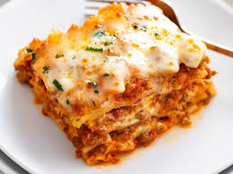

Ingredients
For the Meat Sauce:
- 1 lb (450g) ground beef
- 1 lb (450g) Italian sausage (optional for extra flavor)
- 1 onion, finely chopped
- 4 cloves garlic, minced
- 28 oz (800g) can crushed tomatoes
- 2 tsp dried basil
- 2 tbsp olive oil
- Salt and pepper to taste
For the Cheese Mixture:
- 16 oz (450g) ricotta cheese
- 1 large egg
- 2 cups (200g) shredded mozzarella cheese
- ½ cup (50g) grated Parmesan cheese
- 2 tbsp chopped fresh parsley (or 1 tsp dried parsley)
For the Lasagna Layers:
- 12 lasagna noodles (boiled according to package instructions)
- 2 cups (200g) shredded mozzarella cheese (for layering and topping)
- ½ cup grated Parmesan cheese (for topping)
Instructions:
- Prepare the Meat Sauce:
- Heat olive oil in a large pan over medium heat.
- Add ground beef, Italian sausage (if using), and cook until browned. Drain excess fat.
- Add chopped onion and garlic, sauté until soft.
- Stir in crushed tomatoes, tomato paste, tomato sauce, and sugar. Add basil, oregano, salt, and pepper.
- Simmer uncovered for 30-45 minutes, stirring occasionally.
- Prepare the Cheese Mixture:
- In a medium bowl, mix ricotta cheese, egg, 2 cups mozzarella, ½ cup Parmesan, and parsley. Set aside.
- Assemble the Lasagna:
- Preheat oven to 375°F (190°C).
- Spread a thin layer of meat sauce at the bottom of a 9x13 inch (23x33 cm) baking dish.
- Place 3 lasagna noodles on top of the sauce.
- Spread a layer of the cheese mixture over the noodles.
- Add a layer of meat sauce on top of the cheese.
- Repeat the layers (noodles, cheese mixture, meat sauce) until you've used all ingredients, ending with a
layer of meat sauce on top.
- Sprinkle the remaining 2 cups of mozzarella and ½ cup Parmesan over the final layer.
- Bake:
- Cover the lasagna with aluminum foil (to prevent the cheese from burning) and bake for 25 minutes.
- Remove foil and bake an additional 20-25 minutes until the cheese is golden and bubbly.
- Let it Rest:
Allow the lasagna to sit for 10-15 minutes before cutting and serving.
Enjoy your delicious homemade lasagna!
